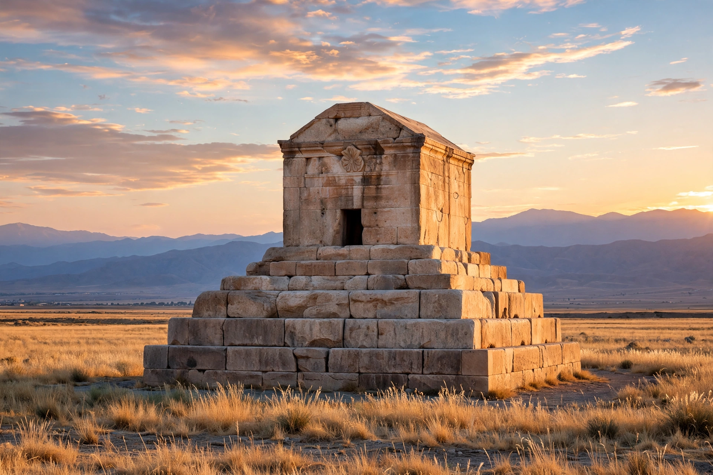

Cyrus the Great

The tomb of Cyrus the Great at Pasargadae, a limestone chamber on a stepped platform
Cyrus II of Persia (c. 600–530 BC), commonly known as Cyrus the Great, was the founder of the Achaemenid Empire. In two decades he united the Persian tribes, overthrew the Median Empire, conquered Lydia and the Neo-Babylonian Empire, and created the largest state yet seen, stretching from the Aegean to Central Asia. Unusually for an ancient conqueror, he was remembered with admiration by many of his subjects: Babylonian priests praised his piety, and the Hebrew Bible calls him God's anointed for ending the Babylonian exile of the Jews.
Conquests
Cyrus succeeded his father Cambyses I as king of Anshan, a vassal of Media. In 550 BC he rebelled, defeated King Astyages and took the Median capital Ecbatana. In 547 BC he defeated Croesus of Lydia and captured Sardis. In 539 BC, after victory at Opis, his army entered Babylon largely unopposed; the Cyrus Cylinder, a Babylonian inscription, proclaims his restoration of temples and displaced peoples. He campaigned in Central Asia and died there in 530 BC, fighting, in Herodotus' account, the Massagetae under Queen Tomyris.
Legacy
Cyrus was buried in a limestone tomb at Pasargadae, his capital, which still stands. Xenophon's Cyropaedia made him a model ruler for later ages. In modern Iran he is a national hero; the Cyrus Cylinder is often (controversially) described as an early charter of human rights, and his reputation for magnanimity toward conquered peoples shaped the empire his successors inherited.